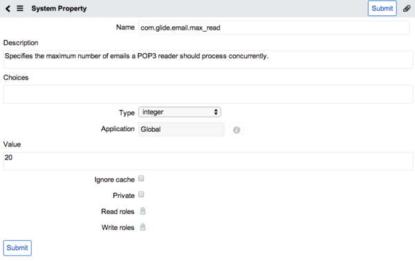

Adding a Property
| |
Note: This article applies to Fuji. For more current information, see Adding a Property at http://docs.servicenow.com
The Wiki page is no longer being updated. Please refer to http://docs.servicenow.com for the latest product documentation. |
1 Overview
Some properties in the system are not visible in an instance by default. However, administrators can add properties to the System Property [sys_properties] table.
See System Properties Best Practices for detailed information about how system properties work and examples of how to create them.
2 Adding a Property
- Enter sys_properties.list in the navigation filter.
- The entire list of properties in the System Properties [sys_properties] table appears.
- Verify the property that you want to create does not already exist.
- Click New.
- Complete the form as follows (see table).
- Click Submit.
- The System Property form for an email property.
{kind=link}
| |
Note: See Available System Properties for a list of properties in the base system. This list includes a description of each property along with the Type and Default value. |
| Field | Description |
|---|---|
| Name | Database name of the property. For example, the name of the condition builder property that sets a maximum character limit for the condition builder query is: glide.list.filter_max_length. |
| Description | Descriptive text that explains what that property does. |
| Choices | Comma-separated values for a choice list type property. If you need a different choice list label and value, use an equal sign (=) to separate the label from the value. For example, Blue=0000FF,Red=FF0000,Green=00FF00 will display Blue, Red, and Green in the dropdown list, and save the corresponding hex value in the property value field. |
| Type | Type of property. Select from the following: choice list, color, image, password, password2, string, true|false. See Introduction to Fields for more information on these fields. |
| Value | The default value of the property. |
| Ignore cache | Set this option to true to avoid flushing the cache when the value changes. The cache stores commonly used items in memory such as forms and UI elements. Typically, you only need to ignore the cache if the system property depends upon a dynamic change on the form, and you want to ensure the property uses the current value rather than a cached value. |
| Private | Set this property to true to exclude this property from update sets. Keeping system properties private prevents settings in one instance from overwriting values in another instance. For example, you may not want a system property in a production instance to use a particular value from a development instance. |
| Read roles | Roles that have read access to the property. |
| Write roles | Roles that can edit the property. |
Administrators can also create a list module in the application menu that links to the list of system properties. Depending on the property's name, an admin might be able to change its value only through this new Module, or it may appear in one of the Properties pages in System Properties. For example, any property whose name begins with glide.ui will automatically appear in the System Properties > UI Properties page.